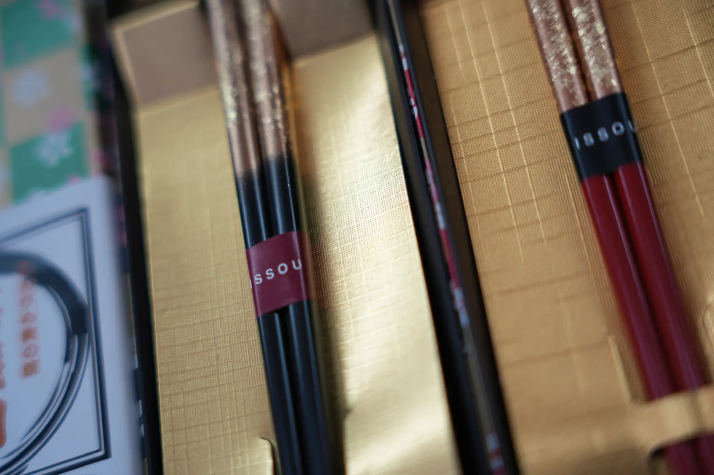

「ハシ」という音が繋ぐ2つの世界
日本語の「はし」という音には、二つの意味が宿っています。一つは、毎日の食卓に欠かせない「箸（はし）」。もう一つは、二つの場所や世界を繋ぐ「橋（はし）」。この偶然とも必然とも思える言葉の重なりは、箸という道具が持つ深い意味を静かに物語っています。食べるという行為を通じて、人と人、人と自然、そして現在と過去を繋いでいく。箸はただの食器ではなく、日本人の暮らしと精神を繋いできた「橋」そのものなのです。
箸蔵寺とは

徳島県三好市に佇む箸蔵寺は、創建から1,200年以上の歴史を誇る古刹です。「箸の神様」として知られるこの寺では、毎年多くの参拝者が使い古した箸を持ち寄り、感謝を込めて供養する「箸供養」が行われています。食を支え、命を繋いできた箸への敬意と感謝——その祈りの文化が、この地には今も脈々と受け継がれています。
豊かな食卓は、一膳の箸から。この箸は、箸蔵に根付く「食と箸への感謝」の精神にインスピレーションを受け、日々の食卓をひとつの特別な場へと変えるためにセレクトされました。